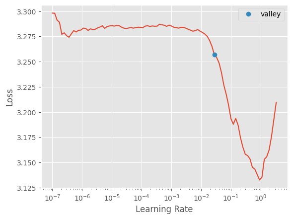
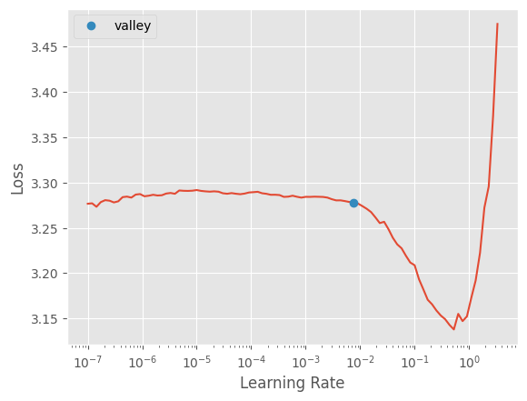
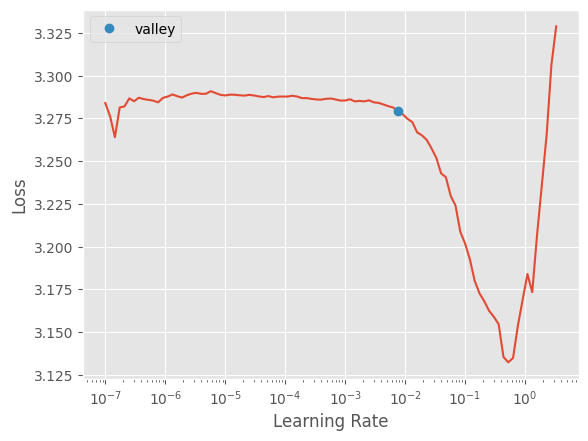
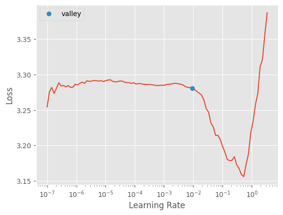
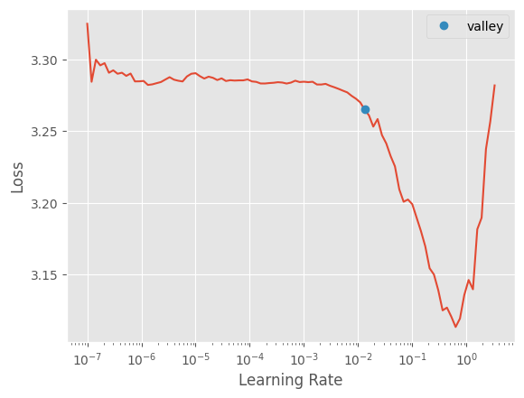
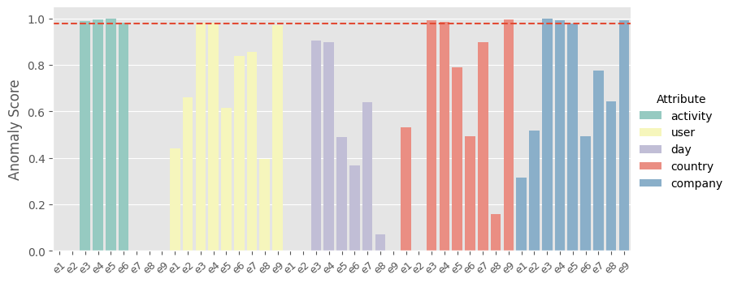
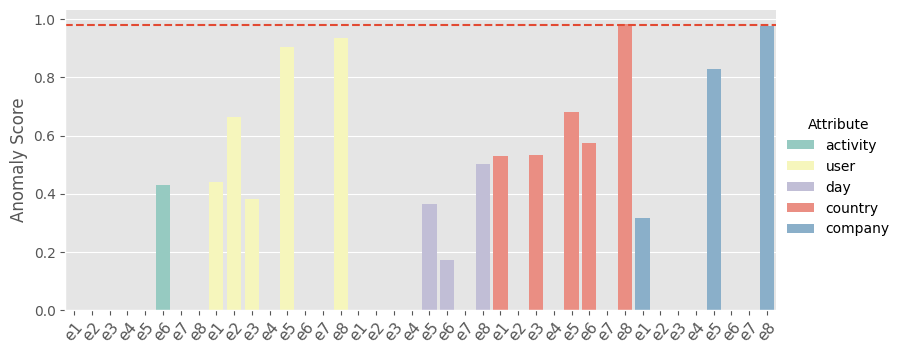
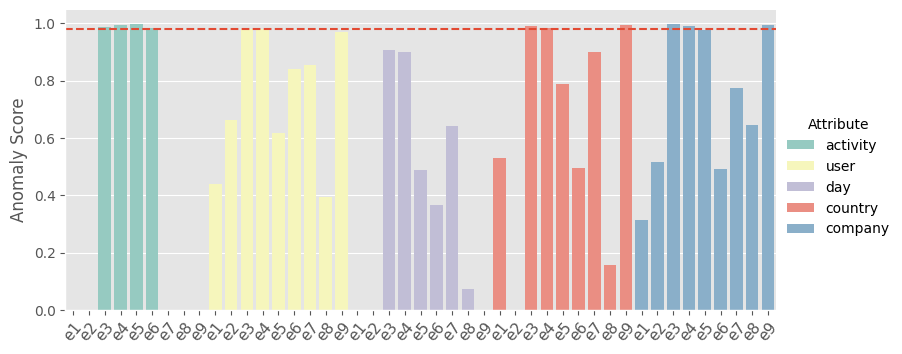

log_name='pdc_2020_0101100'Anomaly Detection
Includes the anomaly detection algorithm, i.e. the prediction model, the loss functions and the anomaly score calculation and classification, as well as the metric computation.
Only Control-flow
log = import_log(f'./data/logs/csv/dapnn_ds/PDC2020_training/{log_name}.csv.gz')
log.head(20)| activity | event_id | |
|---|---|---|
| trace_id | ||
| trace 1 | ###start### | 0 |
| trace 1 | t31 | 1 |
| trace 1 | t41 | 2 |
| trace 1 | t26 | 3 |
| trace 1 | t36 | 4 |
| trace 1 | t44 | 5 |
| trace 1 | t54 | 6 |
| trace 1 | t33 | 7 |
| trace 1 | t23 | 8 |
| trace 1 | t65 | 9 |
| trace 1 | t76 | 10 |
| trace 1 | t21 | 11 |
| trace 1 | t74 | 12 |
| trace 1 | t32 | 13 |
| trace 1 | t64 | 14 |
| trace 1 | t41 | 15 |
| trace 1 | t33 | 16 |
| trace 1 | t23 | 17 |
| trace 1 | t21 | 18 |
| trace 1 | t32 | 19 |
Create PPObj with vocab and dataloaders
training_dl
training_dl (log, cat_names='activity', seed=45, ws=5, bs=32)
o,dls,categorify = training_dl(log)x,y= dls.one_batch()Define Deep Learning Model
ControlFlowModel
ControlFlowModel (o)
Base class for all neural network modules.
Your models should also subclass this class.
Modules can also contain other Modules, allowing to nest them in a tree structure. You can assign the submodules as regular attributes::
import torch.nn as nn
import torch.nn.functional as F
class Model(nn.Module):
def __init__(self):
super().__init__()
self.conv1 = nn.Conv2d(1, 20, 5)
self.conv2 = nn.Conv2d(20, 20, 5)
def forward(self, x):
x = F.relu(self.conv1(x))
return F.relu(self.conv2(x))Submodules assigned in this way will be registered, and will have their parameters converted too when you call :meth:to, etc.
.. note:: As per the example above, an __init__() call to the parent class must be made before assignment on the child.
:ivar training: Boolean represents whether this module is in training or evaluation mode. :vartype training: bool
m=ControlFlowModel(o)pred=m(x.cpu())y[0].cpu()tensor([20, 14, 20, 24, 10, 19, 23, 18, 23, 14, 14, 15, 14, 6, 19, 12, 14, 8,
23, 16, 17, 10, 22, 13, 6, 26, 13, 14, 11, 19, 6, 15])squeeze_cross_entropy = lambda x,y:F.cross_entropy(x,y[0])
squeeze_accuracy =lambda x,y:accuracy(x,y[0])squeeze_cross_entropy(pred.cuda(),y),squeeze_accuracy(pred.cuda(),y)(tensor(3.2628, device='cuda:0', grad_fn=<NllLossBackward>),
TensorBase(0.1875, device='cuda:0'))Define Training Loop and Helper Functions
train_validate
train_validate (dls, m, metrics=<function accuracy>, loss=<function cross_entropy>, epoch=20, print_output=True, model_dir='.', lr_find=True, patience=5, min_delta=0.005, show_plot=True, store_path='tmp', model_name='.model')
Trains a model on the training set with early stopping based on the validation loss. Afterwards, applies it to the test set.
training_loop
training_loop (learn, epoch, print_output, lr_find)
Basic training loop that uses learning rate finder and one cycle training. See fastai docs for more information
HideOutput
HideOutput ()
A utility function that hides all outputs in a context
Train prediction model
train_val = train_validate(dls,m,epoch=25,metrics=squeeze_accuracy,loss=squeeze_cross_entropy)| epoch | train_loss | valid_loss | time | |
|---|---|---|---|---|
| 0 | 2.517840 | 2.400468 | 0.266471 | 00:06 |
| 1 | 1.628425 | 1.553959 | 0.476818 | 00:06 |
| 2 | 1.312923 | 1.262455 | 0.503660 | 00:06 |
| 3 | 1.166748 | 1.173147 | 0.507077 | 00:06 |
| 4 | 1.141692 | 1.086159 | 0.520742 | 00:06 |
| 5 | 1.081097 | 1.092973 | 0.495364 | 00:06 |
| 6 | 1.072851 | 1.053992 | 0.523670 | 00:06 |
| 7 | 1.057887 | 1.058307 | 0.514397 | 00:06 |
| 8 | 1.058676 | 1.028091 | 0.517326 | 00:06 |
| 9 | 1.012709 | 1.033957 | 0.514397 | 00:06 |
| 10 | 1.028024 | 1.039211 | 0.518302 | 00:06 |
| 11 | 1.017703 | 1.024853 | 0.518302 | 00:05 |
| 12 | 1.000363 | 1.023521 | 0.523670 | 00:06 |
| 13 | 1.007020 | 1.011746 | 0.515861 | 00:06 |
| 14 | 0.977153 | 1.010085 | 0.525622 | 00:06 |
| 15 | 0.951577 | 1.014484 | 0.525134 | 00:06 |
| 16 | 0.982534 | 1.011046 | 0.526110 | 00:06 |
| 17 | 0.947973 | 1.008882 | 0.526110 | 00:06 |
| 18 | 0.965707 | 1.007773 | 0.523182 | 00:06 |
Better model found at epoch 0 with valid_loss value: 2.400468349456787.
Better model found at epoch 1 with valid_loss value: 1.5539591312408447.
Better model found at epoch 2 with valid_loss value: 1.262454628944397.
Better model found at epoch 3 with valid_loss value: 1.173147201538086.
Better model found at epoch 4 with valid_loss value: 1.0861592292785645.
Better model found at epoch 6 with valid_loss value: 1.0539923906326294.
Better model found at epoch 8 with valid_loss value: 1.028091311454773.
Better model found at epoch 11 with valid_loss value: 1.0248527526855469.
Better model found at epoch 12 with valid_loss value: 1.0235213041305542.
Better model found at epoch 13 with valid_loss value: 1.0117459297180176.
Better model found at epoch 14 with valid_loss value: 1.010084867477417.
Better model found at epoch 17 with valid_loss value: 1.0088822841644287.
Better model found at epoch 18 with valid_loss value: 1.0077729225158691.
No improvement since epoch 13: early stopping
Better model found at epoch 0 with valid_loss value: 0.5207814574241638.




Load Test Log
import_log_pdc
import_log_pdc (log)
test_log = import_log_pdc(f'../data/logs/csv/dapnn_ds/PDC2020_ground_truth/{log_name}.csv.gz')
test_log.head(25)| activity | case:pdc:costs | normal | event_id | |
|---|---|---|---|---|
| trace_id | ||||
| trace 1 | ###start### | 0.0 | True | 0 |
| trace 1 | t21 | 0.0 | True | 1 |
| trace 1 | t32 | 0.0 | True | 2 |
| trace 1 | t26 | 0.0 | True | 3 |
| trace 1 | t41 | 0.0 | True | 4 |
| trace 1 | t35 | 0.0 | True | 5 |
| trace 1 | t44 | 0.0 | True | 6 |
| trace 1 | t34 | 0.0 | True | 7 |
| trace 1 | t24 | 0.0 | True | 8 |
| trace 1 | t33 | 0.0 | True | 9 |
| trace 1 | t26 | 0.0 | True | 10 |
| trace 1 | t36 | 0.0 | True | 11 |
| trace 1 | t44 | 0.0 | True | 12 |
| trace 1 | t23 | 0.0 | True | 13 |
| trace 1 | t54 | 0.0 | True | 14 |
| trace 1 | t21 | 0.0 | True | 15 |
| trace 1 | t32 | 0.0 | True | 16 |
| trace 1 | t66 | 0.0 | True | 17 |
| trace 1 | t41 | 0.0 | True | 18 |
| trace 1 | t51 | 0.0 | True | 19 |
| trace 1 | t62 | 0.0 | True | 20 |
| trace 1 | t71 | 0.0 | True | 21 |
| trace 1 | t76 | 0.0 | True | 22 |
| trace 1 | ###end### | 0.0 | True | 23 |
| trace 2 | ###start### | 0.0 | True | 0 |
Create PPOBJ of test data with same vocab
process_test
process_test (test_log, categorify, cat_names='activity')
o = process_test(test_log,categorify)Apply Prediction Model
predict_next_step
predict_next_step (o, m, ws=5)
nsp,idx=predict_next_step(o,m)nsp.shapetorch.Size([29095, 27])Calculate Anomaly Score
calc_anomaly_score
calc_anomaly_score (res, o, idx)
anomaly_score = calc_anomaly_score(nsp,o,idx)Classify Anomalies based of Threshhold, get predictions and ground truth, compute a few metrics
get_anomalies
get_anomalies (a_score, o, idx, threshhold=0.98)
y_pred, y_true = get_anomalies(anomaly_score,o,idx)f1_score(y_true, y_pred)0.8446139180171591accuracy_score(y_true, y_pred)0.828precision_score(y_true,y_pred)0.7289256198347107recall_score(y_true,y_pred)0.9821826280623608Get NSP Accuracy on Inrference
nsp_accuracy
nsp_accuracy (o, idx, nsp)
nsp_accuracy(o,idx,nsp)TensorBase(0.5081, device='cuda:0')Rewrite model to support multivariate prediction. Define attr_dict that maps event log to considerable attributes. Dynamically adapt preprocessing, network architecture, loss function, and anomaly score computation
Multivariate Anomaly Detection
attr_dict{'bpic15-0.3-4': ['activity',
'action_code',
'activityNameEN',
'activityNameNL',
'monitoringResource',
'org:resource',
'question'],
'large-0.3-4': ['activity', 'user', 'day', 'country', 'company'],
'small-0.3-4': ['activity', 'user', 'day', 'country', 'company'],
'bpic13-0.3-3': ['activity',
'org:group',
'org:resource',
'org:role',
'organization country',
'product',
'resource country',
'impact'],
'medium-0.3-3': ['activity', 'user', 'day', 'country'],
'medium-0.3-1': ['activity', 'user'],
'bpic17-0.3-1': ['activity', 'EventOrigin', 'org:resource'],
'wide-0.3-3': ['activity', 'user', 'day', 'country'],
'large-0.3-2': ['activity', 'user', 'day'],
'bpic17-0.3-2': ['activity', 'EventOrigin', 'org:resource'],
'bpic13-0.3-1': ['activity',
'org:group',
'org:resource',
'org:role',
'organization country',
'product',
'resource country',
'impact'],
'small-0.3-3': ['activity', 'user', 'day', 'country'],
'bpic12-0.3-1': ['activity'],
'huge-0.3-2': ['activity', 'user', 'day'],
'p2p-0.3-3': ['activity', 'user', 'day', 'country'],
'wide-0.3-4': ['activity', 'user', 'day', 'country', 'company'],
'huge-0.3-1': ['activity', 'user'],
'gigantic-0.3-1': ['activity', 'user'],
'p2p-0.3-1': ['activity', 'user'],
'wide-0.3-2': ['activity', 'user', 'day'],
'bpic15-0.3-2': ['activity',
'action_code',
'activityNameEN',
'activityNameNL',
'monitoringResource',
'org:resource',
'question'],
'large-0.3-1': ['activity', 'user'],
'bpic15-0.3-1': ['activity',
'action_code',
'activityNameEN',
'activityNameNL',
'monitoringResource',
'org:resource',
'question'],
'gigantic-0.3-3': ['activity', 'user', 'day', 'country'],
'medium-0.3-4': ['activity', 'user', 'day', 'country', 'company'],
'medium-0.3-2': ['activity', 'user', 'day'],
'huge-0.3-4': ['activity', 'user', 'day', 'country', 'company'],
'gigantic-0.3-4': ['activity', 'user', 'day', 'country', 'company'],
'bpic13-0.3-2': ['activity',
'org:group',
'org:resource',
'org:role',
'organization country',
'product',
'resource country',
'impact'],
'p2p-0.3-2': ['activity', 'user', 'day'],
'bpic15-0.3-3': ['activity',
'action_code',
'activityNameEN',
'activityNameNL',
'monitoringResource',
'org:resource',
'question'],
'bpic15-0.3-5': ['activity',
'action_code',
'activityNameEN',
'activityNameNL',
'monitoringResource',
'org:resource',
'question'],
'large-0.3-3': ['activity', 'user', 'day', 'country'],
'small-0.3-2': ['activity', 'user', 'day'],
'huge-0.3-3': ['activity', 'user', 'day', 'country'],
'wide-0.3-1': ['activity', 'user'],
'paper-0.3-1': ['activity', 'user'],
'small-0.3-1': ['activity', 'user'],
'gigantic-0.3-2': ['activity', 'user', 'day'],
'p2p-0.3-4': ['activity', 'user', 'day', 'country', 'company']}get_attr
get_attr (attr_dict, log_name)
log_name= 'small-0.3-4'
fn=f'../data/logs/csv/dapnn_ds/binet_logs/{log_name}.csv.gz'
cols= get_attr(attr_dict,log_name)
cols['activity', 'user', 'day', 'country', 'company']log = import_log(fn,cols)
log.head()| activity | timestamp | timestamp_end | anomaly | company | country | day | user | event_id | |
|---|---|---|---|---|---|---|---|---|---|
| trace_id | |||||||||
| 1 | ###start### | NaN | NaN | normal | ###start### | ###start### | ###start### | ###start### | 0 |
| 1 | Activity A | NaN | NaN | normal | Toughzap | Peru | Monday | Sonia | 1 |
| 1 | Activity B | NaN | NaN | normal | Rundofase | Israel | Monday | Jack | 2 |
| 1 | Activity C | NaN | NaN | normal | Stanredtax | Saint Lucia | Monday | Earl | 3 |
| 1 | Activity D | NaN | NaN | normal | Condax | Ghana | Monday | Maryellen | 4 |
o,dls,categorify = training_dl(log,cols)xcat,ycat = dls.one_batch()
xcat.shape,ycat[0](torch.Size([32, 5, 5]),
tensor([10, 3, 9, 12, 18, 18, 9, 3, 3, 1, 1, 7, 11, 1, 1, 1, 5, 6,
1, 5, 8, 4, 17, 18, 3, 3, 4, 4, 13, 6, 21, 12],
device='cuda:0'))emb_szs = get_emb_sz(o)fn=f'../data/logs/csv/dapnn_ds/binet_logs/{log_name}.csv.gz'MultivariateModel
MultivariateModel (emb_szs, lstm_neurons=25, lstm_layers=2)
Base class for all neural network modules.
Your models should also subclass this class.
Modules can also contain other Modules, allowing to nest them in a tree structure. You can assign the submodules as regular attributes::
import torch.nn as nn
import torch.nn.functional as F
class Model(nn.Module):
def __init__(self):
super().__init__()
self.conv1 = nn.Conv2d(1, 20, 5)
self.conv2 = nn.Conv2d(20, 20, 5)
def forward(self, x):
x = F.relu(self.conv1(x))
return F.relu(self.conv2(x))Submodules assigned in this way will be registered, and will have their parameters converted too when you call :meth:to, etc.
.. note:: As per the example above, an __init__() call to the parent class must be made before assignment on the child.
:ivar training: Boolean represents whether this module is in training or evaluation mode. :vartype training: bool
m=MultivariateModel(emb_szs)
pred = m(xcat.cpu())
[i.shape for i in pred][torch.Size([32, 42]),
torch.Size([32, 138]),
torch.Size([32, 14]),
torch.Size([32, 295]),
torch.Size([32, 142])]my_metric
my_metric (p, y)
my_loss
my_loss (p, y)
multi_loss_sum
multi_loss_sum (o, p, y)
Multi Loss function that sums up multiple loss functions. The selection of the loss function is based on the PPObj o
get_metrics
get_metrics (o)
loss=partial(multi_loss_sum,o)loss(pred,[i.cpu() for i in ycat])tensor(21.9264, grad_fn=<SumBackward0>)epoch=1
train_val=train_validate(dls,m,loss=loss,metrics=get_metrics(o),epoch=epoch,show_plot=False)| epoch | train_loss | valid_loss | _accuracy_idx | _accuracy_idx | _accuracy_idx | _accuracy_idx | _accuracy_idx | time |
|---|---|---|---|---|---|---|---|---|
| 0 | 7.136340 | 7.045480 | 0.826224 | 0.544595 | 0.477460 | 0.553563 | 0.659477 | 00:32 |
Better model found at epoch 0 with valid_loss value: 7.045479774475098.
Better model found at epoch 0 with valid_loss value: 0.8068852424621582.Load Test Log for Inference
log = import_log(fn)
log.head()
o = process_test(log,categorify,cols)predict_next_step
predict_next_step (o, m, ws=5)
res,idx=predict_next_step(o,m)CPU times: user 1.18 s, sys: 183 ms, total: 1.36 s
Wall time: 315 msmultivariate_anomaly_score
multivariate_anomaly_score (res, o, idx, cols)
score_df=multivariate_anomaly_score(res,o,idx,cols)
score_df| activity | user | day | country | company | trace_id | |
|---|---|---|---|---|---|---|
| 0 | 0.000000 | 0.439668 | 0.000000 | 0.531000 | 0.315139 | 1 |
| 1 | 0.000000 | 0.662233 | 0.000000 | 0.000000 | 0.000000 | 1 |
| 2 | 0.000000 | 0.380046 | 0.000000 | 0.532485 | 0.000000 | 1 |
| 3 | 0.000000 | 0.000000 | 0.000000 | 0.000000 | 0.000000 | 1 |
| 4 | 0.000000 | 0.904819 | 0.362798 | 0.681615 | 0.828734 | 1 |
| ... | ... | ... | ... | ... | ... | ... |
| 51690 | 0.000000 | 0.720104 | 0.537395 | 0.000000 | 0.000000 | 5000 |
| 51691 | 0.000000 | 0.000000 | 0.298893 | 0.097286 | 0.000000 | 5000 |
| 51692 | 0.989942 | 0.946027 | 0.391907 | 0.980420 | 0.982797 | 5000 |
| 51693 | 0.000000 | 0.345933 | 0.000000 | 0.867805 | 0.635300 | 5000 |
| 51694 | 0.000000 | 0.909175 | 0.089738 | 0.985204 | 0.862531 | 5000 |
51695 rows × 6 columns
Anomaly Classification
We can set a fixed threshold or define a custom threshold function. Currently only fixed threshold is used.
get_thresholds
get_thresholds (col, act_threshold=0.964, attr_threshold=0.9971)
Defines a custom threshold function
multivariate_anomalies
multivariate_anomalies (score_df, cols, idx, o, anomaly_col='normal', fixed_threshold=None, get_thresholds=<function get_thresholds>)
y_true,y_pred=multivariate_anomalies(score_df,cols,idx,o,fixed_threshold=None,anomaly_col='anomaly')f1_score(y_true, y_pred)0.851963746223565k=o.items.groupby(o.items.index)['anomaly'].last().iloc[np.where(~np.equal(y_pred, y_true))[0]
]
k.value_counts()normal 371
SkipSequence 51
Attribute 32
Early 18
Late 18
Name: anomaly, dtype: int64o.items.groupby(o.items.index)['anomaly'].last().value_counts()normal 3471
Rework 274
SkipSequence 268
Late 261
Early 253
Attribute 239
Insert 234
Name: anomaly, dtype: int64Plot Anomaly Scores for a Trace
score_df['event_id']=score_df.groupby('trace_id').cumcount()
plot_data=score_df.melt(value_vars=['activity','user','day','country','company'],value_name='Anomaly Score',var_name='Attribute',id_vars=['trace_id','anomaly','event_id'])
plot_data['event_id']=plot_data.groupby('trace_id').cumcount()
plot_data| trace_id | anomaly | event_id | Attribute | Anomaly Score | |
|---|---|---|---|---|---|
| 0 | 1 | normal | 0 | activity | 0.000000 |
| 1 | 1 | normal | 1 | activity | 0.000000 |
| 2 | 1 | normal | 2 | activity | 0.000000 |
| 3 | 1 | normal | 3 | activity | 0.000000 |
| 4 | 1 | normal | 4 | activity | 0.000000 |
| ... | ... | ... | ... | ... | ... |
| 258470 | 5000 | SkipSequence | 40 | company | 0.000000 |
| 258471 | 5000 | SkipSequence | 41 | company | 0.000000 |
| 258472 | 5000 | SkipSequence | 42 | company | 0.982797 |
| 258473 | 5000 | SkipSequence | 43 | company | 0.635300 |
| 258474 | 5000 | SkipSequence | 44 | company | 0.862531 |
258475 rows × 5 columns
import seaborn as snsdata=plot_data[plot_data['trace_id']==6].copy()
data['xticks']= [f'e{y+1}' for x in range(5) for y in range(len(data)//5)]
print(len(data))
print(data['anomaly'].iloc[0])
print(data['trace_id'].iloc[0])
times = data.event_id.unique()
g = sns.FacetGrid(data, col="trace_id", hue="Attribute",
palette="Set3", height=4, aspect=2)
g.map(sns.barplot, 'event_id', 'Anomaly Score', order=times)
g.add_legend()
ax1 = g.axes[0][0]
g.set_titles(col_template="", row_template="")
g.set_axis_labels('')
ax1.axhline(0.98, ls='--')
for ax in g.axes.flat:
ax.set_xticklabels([f'e{y+1}' for x in range(5) for y in range(len(data)//5)], rotation=40,fontsize=9) # set new labels
plt.show()45
SkipSequence
6
import matplotlib.pyplot as plt
plt.style.use('ggplot')def plot_anomaly_scores(trace_id):
data=plot_data[plot_data['trace_id']==trace_id]
print(len(data))
print(data['anomaly'].iloc[0])
print(data['trace_id'].iloc[0])
times = data.event_id.unique()
g = sns.FacetGrid(data, col="trace_id", hue="Attribute",
palette="Set3", height=4, aspect=2)
g.map(sns.barplot, 'event_id', 'Anomaly Score', order=times)
g.add_legend()
ax1 = g.axes[0][0]
g.set_titles(col_template="", row_template="")
g.set_axis_labels('')
ax1.axhline(0.98, ls='--')
for ax in g.axes.flat:
ax.set_xticklabels([f'e{y+1}' for x in range(5) for y in range(len(data)//5)], rotation=50,fontsize=11) # set new labels
plt.show()plot_anomaly_scores(1)40
normal
1
plot_anomaly_scores(6)45
SkipSequence
6